Introduction
Ce rapport accompagne le relevé d'audit effectué sur le site « CSSF.lu ».
La méthodologie d'audit employée repose sur le référentiel RGAA 4.1, consultable à l'adresse suivante : https://accessibilite.public.lu/fr/rgaa4.1/criteres.html
L'audit a été réalisé au moyen de l'utilisation de navigateurs web et d'outils spécialisés. Des tests de restitution ont également été effectués conformément à la base de référence définie par le RGAA 4.1.
Échantillon
L'audit a porté sur un échantillon de 8 pages pour le niveau double A (AA) :
| Nº page | Titre de la page | URL |
|---|---|---|
| P01 | Accueil | https://www.cssf.lu/fr/ |
| P02 | Contact | https://www.cssf.lu/fr/contacts/ |
| P03 | Aide | https://www.cssf.lu/fr/aide/ |
| P04 | Conditions générales | https://www.cssf.lu/fr/conditions-generales-dutilisation-et-protection-des-donnees/ |
| P05 | Page de contenu | https://www.cssf.lu/fr/obligations-informations-emetteurs-de-valeurs-mobilieres/ |
| P06 | Cadre réglementaire | https://www.cssf.lu/fr/cadre-reglementaire/ |
| P07 | La CSSF | https://www.cssf.lu/fr/la-cssf/ |
| P08 | Fonds et véhicules d'investissement | https://www.cssf.lu/fr/fonds-et-vehicules-dinvestissement/ |
Environnement de test (base de référence)
Quelques critères RGAA, notamment ceux de la thématique JavaScript, incluent des tests de restitution à effectuer sur des technologies d'assistance associées à des navigateurs et des systèmes d'exploitation. Pour qu'un dispositif HTML / WAI-ARIA ou son alternative soit considéré comme compatible avec l'accessibilité, il faut qu'il soit pleinement fonctionnel, en termes de restitution et de fonctionnalités sur certaines combinaisons. Vous trouverez une explication détaillée de cet environnement de tests dans le document du RGAA 4.1.
Nous détaillons ci-dessous la base de référence utilisée pour réaliser les tests de restitution des composants du site.
Environnement de test – ordinateur
| Technologie d'assistance | Navigateur |
|---|---|
| NVDA 2022.2 | Firefox 106 |
| JAWS 2022 | Firefox 106 |
| VoiceOver (macOS Monterey version 12.5.1) | Safari 15.6 |
Environnement de test — mobile
| Système d'exploitation | Technologie d'assistance | Navigateur |
|---|---|---|
| iPhone 15.5 | VoiceOver | Safari |
Accessibilité des pages auditées
Le site présente un niveau général d'accessibilité moyen.
Le niveau de conformité relevé atteint 44,44 % de conformité sur l'ensemble des pages auditées, avec 39,02 % de conformité au niveau simple A (A) et 61,54 % de conformité au niveau double A (AA).
Le site est non conforme.
Conformité RGAA 4.1 du site
| Conforme | Non conforme | |
|---|---|---|
| A | 39,02 % | 60,98 % |
| AA (légal) | 44,44 % | 55,56 % |
Note sur le calcul de conformité
La conformité globale (Tableau « Conformité RGAA 4.1 ») est calculée de la manière suivante : C / (C+NC). C'est le nombre de critères conformes et NC le nombre de critères non conformes.
C'est ce nombre qui constitue la référence légale. Il représente le taux de conformité de l'échantillon.
Il est normal que le taux de conformité global diffère sensiblement du taux de conformité par page. En effet, un critère NC (non conforme) sur une page rend le critère non conforme sur l'ensemble de l'échantillon.
Pour qu'un site soit conforme (100 % des critères applicables sont conformes au niveau AA), il est nécessaire que le taux de conformité par page équivaille à 100 %.
Conformité pour chaque niveau
| Conforme | Non conforme | |
|---|---|---|
| A | 39,02 % | 60,98 % |
| AA | 61,54 % | 38,46 % |
Moyenne par pages
| Nº page | Titre de la page | %C |
|---|---|---|
| P01 | Accueil | 50,00 % |
| P02 | Contact | 70,00 % |
| P03 | Aide | 100,00 % |
| P04 | Conditions générales | 85,19 % |
| P05 | Page de contenu | 81,48 % |
| P06 | Cadre réglementaire | 63,64 % |
| P07 | La CSSF | 78,58 % |
| P08 | Fonds et véhicules d'investissement | 100,00 % |
Moyenne par thématiques
| Thématiques | C | NC |
|---|---|---|
| Images | 33,33 % | 66,67 % |
| Cadres | 100,00 % | 0,00 % |
| Couleurs | 0 % | 100,00 % |
| Multimédia | NA | NA |
| Tableaux | 0,00 % | 100,00 % |
| Liens | 0,00 % | 100,00 % |
| Script | 25,00 % | 75,00 % |
| Éléments obligatoires | 62,50 % | 37,50 % |
| Structuration | 0,00 % | 100,00 % |
| Présentation | 60,00 % | 40,00 % |
| Formulaires | 37,50 % | 62,50 % |
| Navigation | 71,43 % | 28,57 % |
| Consultation | 50,00 % | 50,00 % |
Impacts utilisateurs
Les principales personnes impactées sont les personnes aveugles et celles qui naviguent au clavier. Les problèmes liés aux scripts, à l'API ARIA et aux formulaires rendent parfois difficile l'utilisation du site par ces utilisateurs.
Contenus dérogés
La dérogation est un moyen d'exclure du champ d'application du référentiel des contenus particuliers. Les cas de dérogations sont très encadrés, vous en trouverez le détail dans le guide des dérogations.
Les contenus suivants n'entrent pas dans le calcul de la conformité ni dans le périmètre des éléments à rendre accessibles, ils sont dérogés :
- reCaptcha (motif : service externe) ;
- Carte OpenStreet Map (motif : service externe).
Droit à la compensation
Les dérogations émises notamment pour charge disproportionnée demandent en contrepartie la mise en place d'un moyen de compensation pour les utilisateurs. Pour les documents bureautiques par exemple, vous devez fournir un moyen à l'utilisateur de demander une version accessible d'un document s'il en a besoin. Cela peut être un mail ou un formulaire de contact.
Note sur le relevé des non-conformités
Ne sont cités dans ce rapport que quelques exemples issus du relevé des non-conformités.
De plus, toutes les occurrences d'une non-conformité ne sont pas listées dans le relevé. Par exemple : "le contraste entre la couleur du texte et la couleur d'arrière-plan n'est pas suffisant", le relevé mentionne quelques occurrences, mais ne les cite pas tous.
Avis
Le site présente un niveau moyen en accessibilité, avec notamment de nombreux composants JS non accessibles, rendant la navigation au clavier et/ou avec les technologies d'assistance compliquée voir parfois impossible. On constate également un certain nombre de problèmes de contraste pour du texte mais aussi des composants d'interface.
Les non-conformités les plus bloquantes pour les utilisateurs concernent :
- Des scripts JS non accessibles à la navigation au clavier ni compatibles avec les technologies d'assistance ;
- Présences de liens vides ;
- Des images porteuses d'information sans texte alternatif ;
- Structure de titres incomplète ;
- Structure du document incomplète ;
- Lien d'évitement non fonctionnel ;
- Des champs de formulaire sans étiquette.
Ce sont donc ces points qui devront nécessiter une attention toute particulière et qui demanderont le plus d'efforts.
Annexe technique
Images
Recommandation
Donner à chaque image porteuse d'information une alternative textuelle pertinente et une description détaillée si nécessaire. Lier les légendes à leurs images. Remplacer les images textes par du texte stylé lorsque c'est possible.
Images porteuses d'information
Il est nécessaire de donner une alternative pertinente dans le cas où la suppression de l'image entraînerait un problème de compréhension des contenus.
Constats sur le site
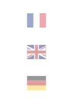Dans le bloc "Documentation" de la page "Conditions générales d'utilisation", les images <svg> pour chaque drapeau n'ont pas d'alternative textuelle, <desc> n'étant pas suffisant.
Images porteuses d'information complexe
Certaines images porteuses d'informations sont complexes et nécessitent une description détaillée, pertinente, structurée et adjacente à l'image afin de permettre aux personnes ne percevant pas les images (comme les personnes aveugles), ou ayant des difficultés à les comprendre lorsqu'elles contiennent du texte (personnes ayant des difficultés de lecture, comme les dyslexiques par exemple) d'accéder à l'information.
Il sera possible de masquer cette description et de prévoir un bouton permettant à l'utilisateur de l'afficher si besoin (par exemple : « Afficher la description de l'image »). Voir un exemple de ce mécanisme. Il est également possible de proposer un lien adjacent à l'image vers la description détaillée.
Constats sur le site
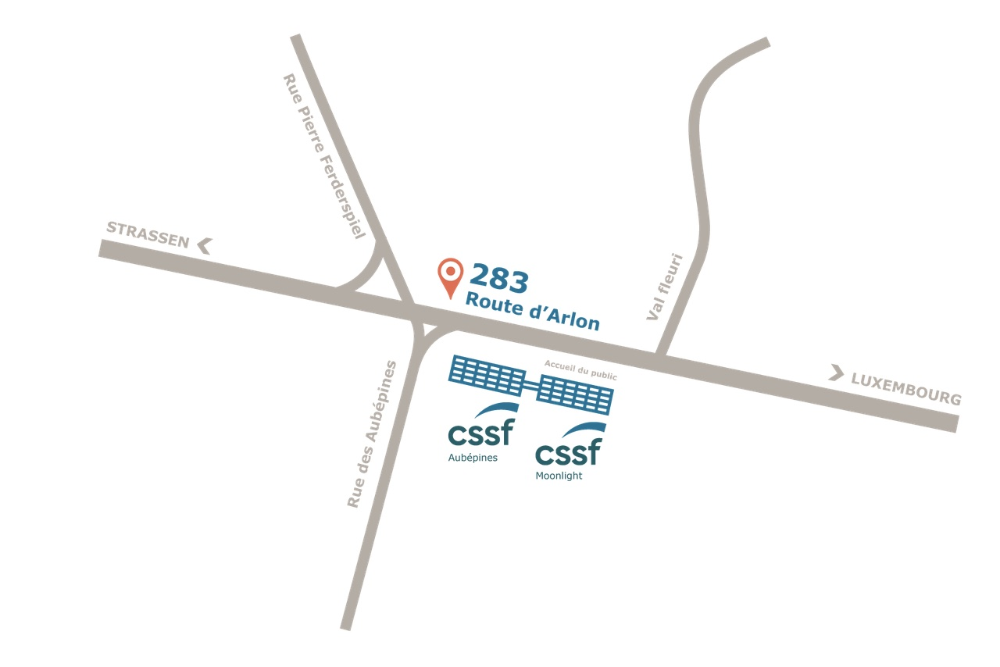Dans la page "La CSSF", l'image du plan d'accès nécessite une description détaillée.
Couleurs
Recommandation
Ne pas donner l'information uniquement par la couleur et utiliser des contrastes de couleurs suffisamment élevés pour les textes et les composants d'interface.
Contrastes des textes
Plusieurs couleurs présentent un rapport de contraste insuffisant, ce qui peut poser problème aux personnes déficientes visuelles qui ont des difficultés à percevoir les couleurs ou les contrastes.
Rapports de contrastes définis par le RGAA
- Pour les textes qui ont une taille de police calculée inférieure à 24px sans effet de graisse ou une taille de police calculée inférieure à 18,5px avec effet de graisse, le rapport de contraste entre la couleur du texte (y compris le texte en image) et son arrière-plan doit être de 4.5:1, au moins.
- Pour les textes qui ont une taille de police calculée supérieure ou égale à 24px sans effet de graisse ou une taille de police calculée supérieure ou égale à 18,5px avec effet de graisse, le rapport de contraste entre la couleur du texte (y compris le texte en image) et son arrière-plan doit être de 3:1, au moins.
Vous pouvez foncer les couleurs pour obtenir le rapport de contraste exigé.
Si la charte graphique ne peut être modifiée, fournissez une méthode aux utilisateurs pour consulter le site avec des contrastes suffisants. Ceci peut être réalisé simplement avec une fonctionnalité JavaScript et une surcharge CSS des couleurs.
Vous pouvez voir un exemple de ce type de mécanisme sur le site sncf.com. Dans les réglages d'accessibilité, vous trouverez une option qui permet d'afficher le site avec des contrastes renforcés et inversés.
Constats sur le site
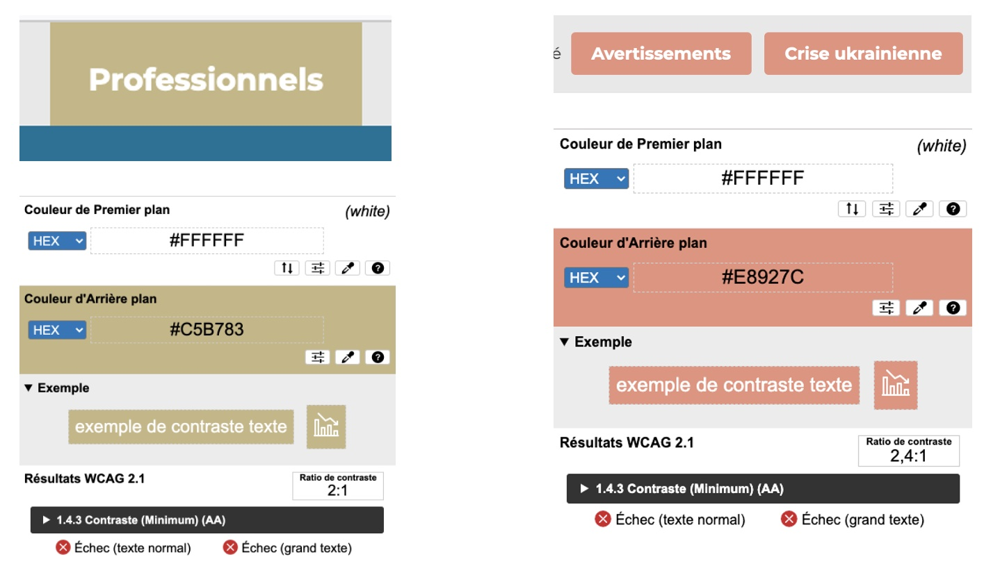Dans la page d'Accueil, on retrouve des textes dont le contraste n'est pas suffisant par rapport à la couleur de fond, par exemple :
- La couleur
#FFFsur le fond#C5B7B3, avec un ratio de 2 ; - La couleur
#FFFsur le fond#E8927C, avec un ratio de 2,4.
Contraste des composants d'interface
Les composants d'interface, les illustrations porteuses d'information ou encore les mises en couleurs porteuses d'information doivent être suffisamment contrastés pour être perçus par les utilisateurs ayant des troubles de perception des couleurs. Par exemple, une icône porteuse d'information devra avoir un rapport de contraste avec la couleur de fond de 3. De même, pour un champ de saisie de formulaire, dont la zone active est matérialisée par sa bordure, alors la couleur de cette bordure devra avoir un rapport de contraste de 3 avec la couleur de fond de la page.
Constats sur le site
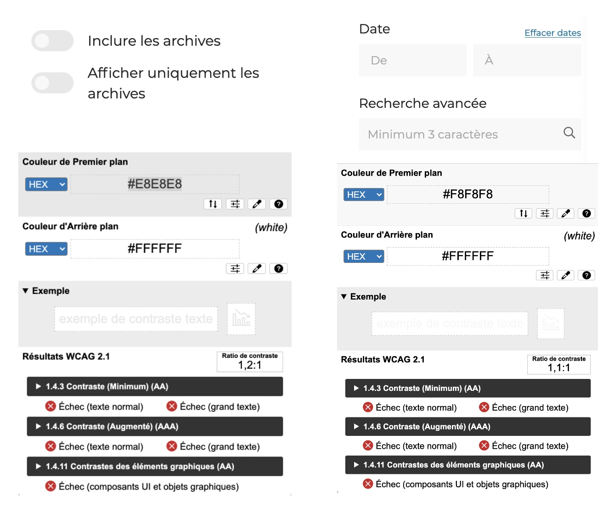Dans une page recherche, certains composants d'interface ne sont pas assez contrastés, par exemple :
- La couleur des champs de formulaire
#f8f8f8sur le fond#FFFFFF, avec un ratio de 1,1 ; - La couleur des boutons switch
#E8E8E8sur le fond#FFFFFF, avec un ratio de 1,2.
Information par la couleur
Lorsqu'une information est donnée par la couleur, il faut qu'elle soit également véhiculée par une autre méthode, par exemple par un texte qui donne la même information, pour être perçue par les utilisateurs aveugles.
Il faut également donner un indice visuel autre que la couleur, afin de répondre aux besoins des personnes déficientes visuelles (les daltoniens par exemple). Il peut s'agir d'un symbole, d'une texture, de chiffres.
Constats sur le site
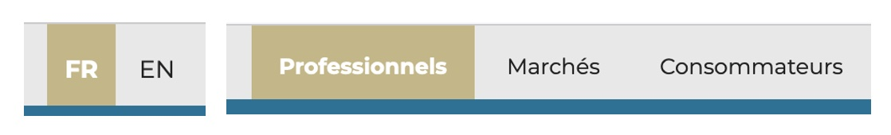Certaines informations sont données uniquement par la couleur, par exemple :
- Dans le menu "Langue", la langue active est indiquée par la couleur ;
- Dans le menu "Profile", le profil en cours est indiqué par la couleur.
Tableaux
Recommandation :
Donner un résumé à chaque tableau de données complexe, s'assurer que pour chaque tableau de données ayant un titre, ce titre est pertinent, identifier clairement les cellules d'en-tête, utiliser un mécanisme pertinent pour lier les cellules de données aux cellules d'en-tête. Pour chaque tableau de mise en forme, veiller à sa bonne linéarisation.
Tableaux de données
Un tableau de données doit répondre à certains enjeux pour être exploité correctement par les lecteurs d'écran. Les enjeux sont les suivants :
- Le tableau doit posséder un titre permettant de l'identifier (
<caption>) ; - Les en-têtes doivent être identifiés (balises
<th>) et doivent pouvoir être restitués lorsque l'utilisateur parcourt chaque cellule à l'aide de son lecteur d'écran (attributsscopesi nécessaire).
Constats sur le site
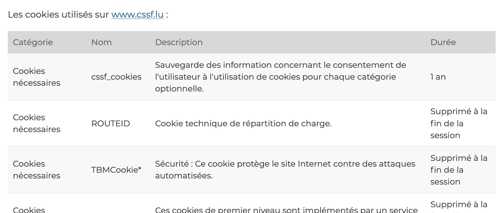Dans la page "Conditions générales d'utilisation", pour le tableau des cookies utilisés, les en-têtes de cellules ne sont pas déclarés correctement.
Liens
Recommandation :
Donner des intitulés de lien explicites, grâce à des informations de contexte notamment, utiliser le titre de lien le moins possible. S'assurer que le nom visible est contenu dans le nom accessible.
Liens-images
Un lien-image est un lien dont le contenu n'est composé que d'une ou plusieurs images (balises <img>). Généralement, ces liens ne posent aucun problème aux utilisateurs voyants qui parviennent à comprendre la destination du lien grâce à l'image et son contexte. En revanche, pour une personne aveugle, ces liens doivent obligatoirement posséder un intitulé.
L'intitulé d'un lien-image est généré grâce à l'alternative de l'image contenue dans ce lien.
Constats sur le site
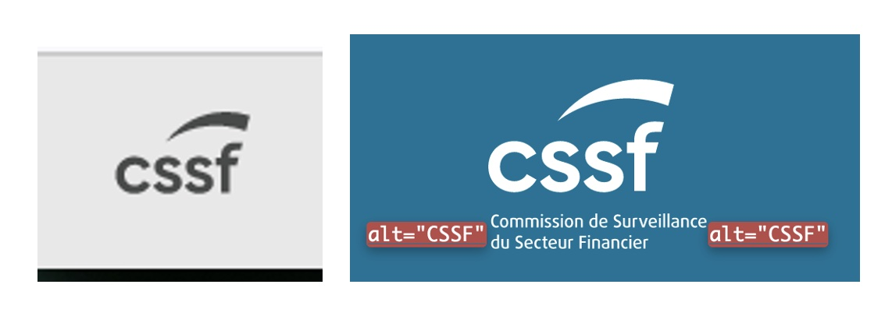Dans la page d'Accueil, on retrouve des liens-images mal implémentés, par exemple :
- Le logo "CSSF" : le lien contient deux images qui possèdent le même texte alternatif. Le logo dédié à l'impression pourrait être ignoré par exemple, via un attribut
altvide ; - Le logo "CSSF" dans la version "sticky" de l'en-tête n'a pas d'attribut
alt.
Présence d'intitulés
Un lien doit toujours posséder un intitulé permettant à l'utilisateur de comprendre sa destination. Les liens contenant uniquement des objets graphiques (images, icônes, etc.) posent souvent problème pour les personnes aveugles.
Pour ces liens, la technique pour fournir un intitulé dépend des cas :
- Si ces liens-images sont construits avec des balises images (
<img />), renseignez l'alternative de l'image (par exemple :<a href="https://twitter.com/example"><img src="path/to/img/png" alt="Suivez-nous sur Twitter" /></a>) - Si ces liens-images sont construits avec des balises SVG (
<svg>), alors ajoutez sur cette balise unrole="img"pour indiquer aux lecteurs d'écran qu'il s'agit bien d'une image et un intitulé pararia-label="Suivez-nous sur Twitter".
Constats sur le site
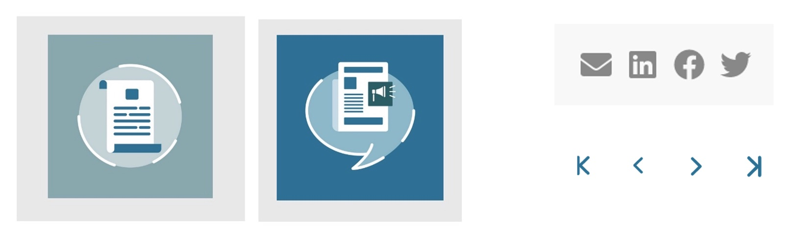On retrouve des liens qui n'ont pas d'intitulé entre les balises <a> / </a>, par exemple :
- Dans la page d'Accueil, le bloc "À la une", les liens qui ouvrent des documents PDF ;
- Les liens de partage ;
- Les liens de la pagination dans une page recherche.
Scripts
Recommandation :
Donner si nécessaire à chaque script une alternative pertinente. Rendre possible le contrôle de chaque code script au moins par le clavier et la souris et s'assurer de leur compatibilité avec les technologies d'assistance. Identifier les messages de statut lorsque c'est nécessaire.
Utilisation des boutons et des liens
Pour les aveugles et les grands malvoyants qui utilisent un lecteur d'écran, ce manque de distinction claire entre les liens et les boutons peut poser de graves problèmes.
Ainsi, un bouton implémenté sous la forme d'un lien qui déclenche une action de la page risque de perturber l'utilisateur qui s'attendra au chargement d'une nouvelle page.
De manière générale, les liens devraient être réservés à l'affichage d'une nouvelle page ou la création de liens d'accès rapide dans le contenu. Dans tous les autres cas, l'emploi d'un bouton d'action est plus pertinent.
Enfin, chaque bouton doit avoir un nom accessible défini, soit par l'intermédiaire d'un texte (visible ou positionné hors écran) ou d'une propriété title, aria-label ou aria-labelledby.
Constats sur le site
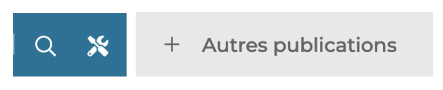Sur la page d'Accueil, certains composants qui déclenchent une action sont implémentés dans un lien alors qu'ils devraient être implémentés dans un <button>, par exemple :
- Les boutons "Recherche d'information" et "Ouvrir la boîte à outils CSSF" ;
- Le bouton "+ Autres publications".
Utilisation inappropriée de propriétés ARIA
Les propriétés ARIA sont chargées de transmettre des informations indispensables à la restitution et l'utilisation des composants développés avec JavaScript aux technologies d'assistance. Une utilisation inappropriée peut poser des problèmes de restitution notamment.
Constats sur le site
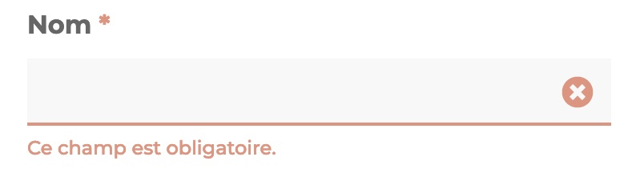Dans la page Contact, les messages d'erreur du formulaire ont la propriété role="alert", ce qui n'est pas pertinent.
Éléments interactifs inaccessibles au clavier
Si un élément ne peut pas recevoir le focus ou n'est pas totalement utilisables au clavier, les utilisateurs pour lequel le clavier est le seul moyen de naviguer seront bloqués.
Constats sur le site
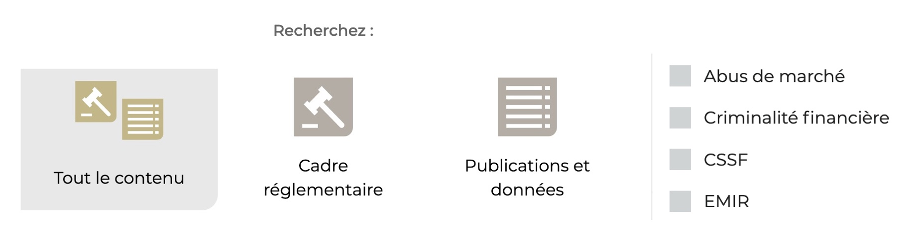Certains éléments ne sont pas utilisable au clavier, parce que l'élément qui permet de recevoir le focus est caché en CSS via display: none, par exemple :
- Dans la modale "Recherche", les options "Tout le contenu", "Cadre réglementaire" et "Publications et données" ;
- Dans les filtres avancés, les options avec une case à cocher.
Fenêtres modales
Constats sur le site
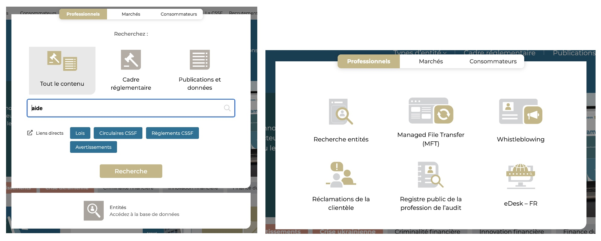Les modales "Recherche" et "Boîte à outil" ne sont pas compatibles avec les technologies d'assistance et devraient respecter le motif de conception ARIA Dialog.
Gestion de la visibilité de zones
Le site possède des fonctionnalités d'affichage ou de masquage des zones de contenus. L'état affiché/masqué du contenu additionnel doit pouvoir être disponible pour les technologies d'assistance afin que les utilisateurs aveugles accèdent à cet état.
Pour ce type d’élément, l’implémentation du motif ARIA Disclosure est recommandée.
Constats sur le site
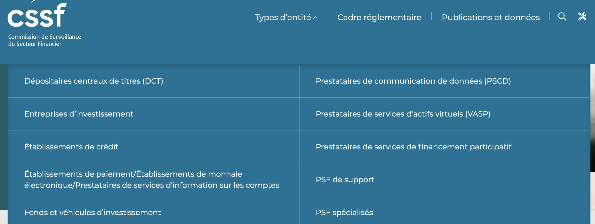Le menu de navigation principal possède des sous-menus qui peuvent se contrôler par un bouton qui permet d'afficher ou de masquer, mais qui n’implémente pas le motif de conception ARIA Disclosure.
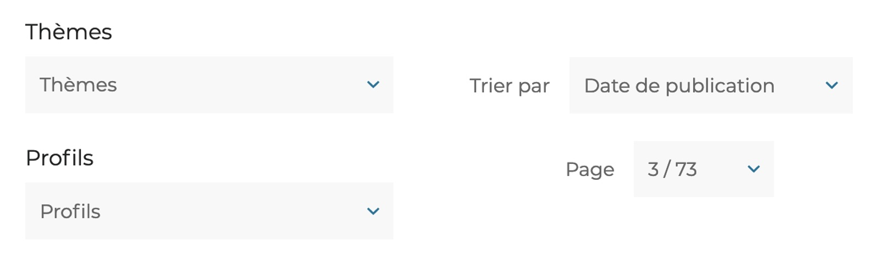Dans une page recherche, on retrouve des boutons qui affichent/masquent des fonctionnalités, par exemple les filtres "Thèmes" et "Profils" ou encore les systèmes de tri "Trier par" et "Page".
Liste d'options
Le site possède des composants qui se présentent sous forme de liste, avec la possibilité de sélectionner une option. La navigation dans la liste et la sélection d'une option doit pouvoir être disponible au clavier et pour les technologies d'assistance.
Pour ce type d’élément, l’implémentation du motif ARIA Listbox est recommandée.
Constats sur le site
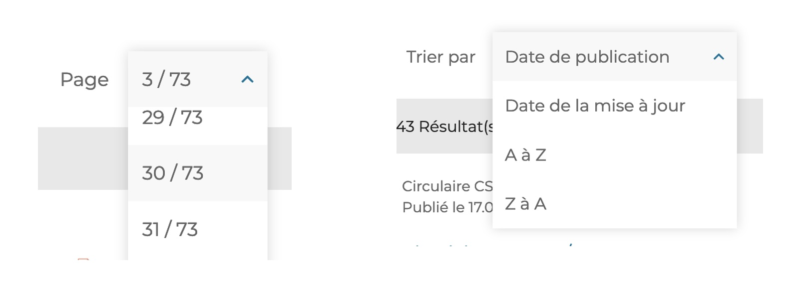Dans une page recherche, on retrouve des composants liste qui ne sont pas compatibles avec les technologies d'assistance, par exemple "Trier par" et "Page".
Système d'onglets
Un système d'onglets permet d'afficher du contenu en naviguant depuis des onglets. La navigation et l'affichage du contenu doivent pouvoir se faire au clavier et être disponibles pour les technologies d'assistance.
Pour ce type d’élément, l’implémentation du motif ARIA Tabs est recommandée.
Constats sur le site
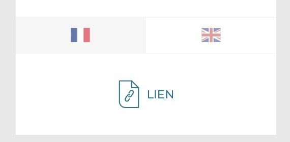Dans la page de résultat de recherche, dans la version mobile, on retrouve plusieurs systèmes d'onglets (pour télécharger les PDF dans plusieurs langues, par exemple) et qui ne sont pas compatibles avec les technologies d'assistance.
Barre de progression
Une barre de progression permet de signaler à l’utilisateur qu’une opération est en cours. Celle-ci doit être compatible avec les technologies d'assistance afin que l'action qui est en cours soit restituée.
Constats sur le site
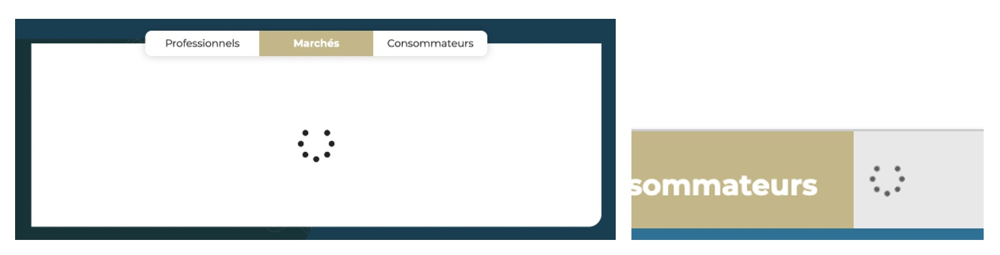On constate une indication de chargement de contenu, notamment lorsqu'on modifie le contexte de la page, mais qui n'est pas restituée par les technologies d'assistance.
Repositionner le focus sur une zone de l’écran.
Lorsqu’une fonctionnalité ajoute, modifie, supprime ou met à jour un contenu dans la page, il est nécessaire de repositionner le focus (qui représente la position active de l’utilisateur) à l’endroit le plus approprié.
Ces repositionnements de focus sont indispensables pour que l’utilisateur qui ne voit pas l’écran (personne aveugle par exemple) ou qui utilise des moyens de navigation complexes puisse utiliser chaque fonctionnalité de manière logique et cohérente.
Constats sur le site
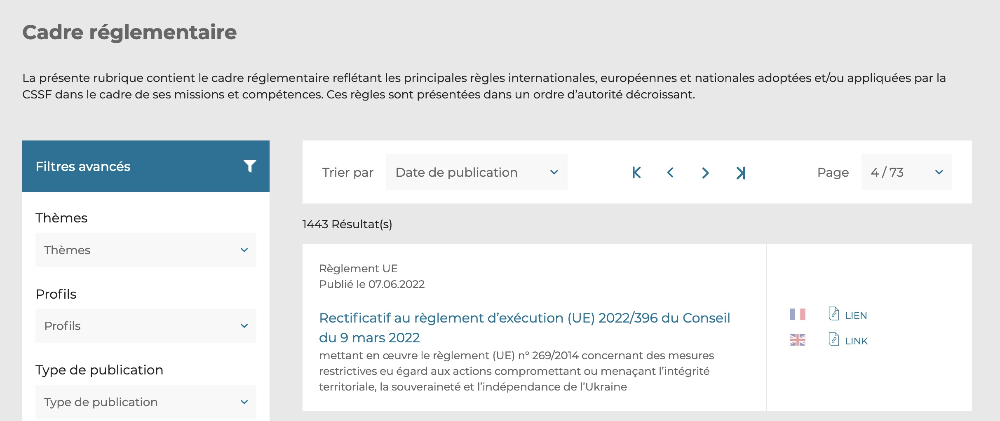Dans la page "Cadre réglementaire", lorsqu'on sélectionne un filtre, la page se recharge en affichant la nouvelle liste de résultat. Le focus devrait être repositionné sur le premier élément de la liste et non pas au début de page.
Éléments obligatoires
Recommandation
Vérifier que chaque page web a un code valide selon le type de document, un titre pertinent et une indication de langue par défaut. Vérifier que les balises ne sont pas utilisées uniquement à des fins de présentation, que les changements de langues et de direction de sens de lecture sont indiqués.
Indication de langue
Les lecteurs d'écran utilisent les indications de langue pour vocaliser le contenu dans la langue définie. La page doit contenir une définition de langue principale (généralement sur l'élément html).
Ensuite, les éléments de langue étrangère présents dans le contenu doivent être signalés. Si on trouve dans la page des termes absents du dictionnaire de la langue principale de la page, il faut les identifier afin que le lecteur d'écran les restitue dans la langue appropriée. En effet, une mauvaise prononciation pourrait mener à des incompréhensions pour les utilisateurs qui reposent uniquement sur des restitutions orales. Les noms propres sont exclus de cette obligation.
Constats sur le site
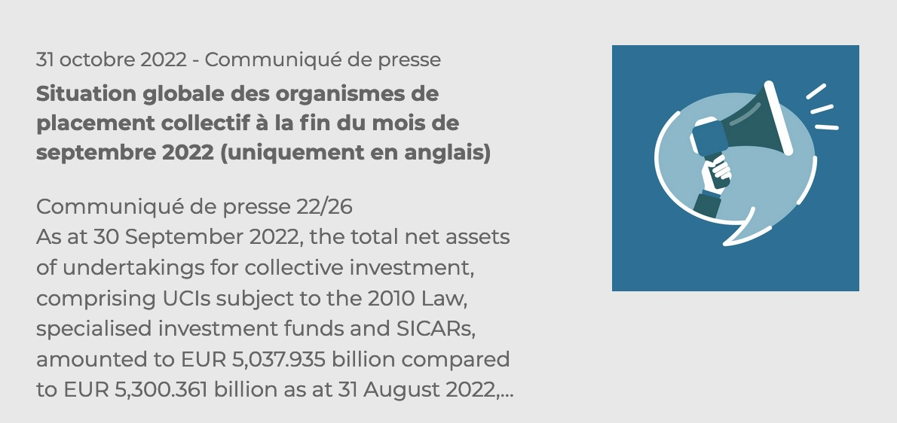Dans la page d'Accueil, on retrouve du texte en anglais, mais dont la langue n'est pas indiquée dans le code HTML.
Validité du code
Les technologies d'assistance, comme les lecteurs d'écran ou les systèmes de contrôle à la voix, s'appuient sur le code des pages pour générer les restitutions et les interactions avec l'utilisateur. Un lecteur d'écran va exploiter le code HTML fourni par le navigateur et les informations accessibles au moyen des API d'accessibilité du système.
Si le code comporte des erreurs (balises mal fermées par exemple), il y a un risque que les fonctionnalités du lecteur d'écran soient impactées, comme la navigation de lien en lien par exemple.
Pour vérifier la conformité d'une page, vous pouvez utiliser le validateur mis à disposition par le W3C.
Constats sur le site
Dans la page d'Accueil et sur d'autres pages, on retrouve des erreurs HTML, par exemple :
- Imbrication d'éléments non autorisée (
<div>dans un<label>,<h3>dans un<button>) ; - Duplication de valeurs d'identification (
id) ; - Balises html manquantes dans le tableau des paramètres des Cookies (
<tr>manquant pour les lignes d'en-tête).
Balises utilisées à des fins de présentation
Les éléments de structure HTML ont chacun une sémantique particulière (paragraphe, titre, image, lien, etc.). Si les éléments sont mal employés (détournés de leur utilité première), cela peut poser des problèmes aux utilisateurs qui naviguent à l'aide d'une technologie d'assistance (lecteur d'écran, plug-in…). En effet, les technologies d'assistance disposent de raccourcis permettant de naviguer rapidement entre certains types d'éléments (paragraphes, titres, listes, etc.). Si ces éléments sont mal employés, les utilisateurs ne peuvent pas utiliser ces fonctionnalités de repère et de navigation dans le contenu.
Constats sur le site

Dans une page recherche, lorsqu'il n'y a pas de résultat, le texte "Voulez-vous rechercher une entité ou inclure les archives ?" n'est pas structuré alors qu'il devrait être dans un <p>.
Structuration de l'information
Recommandation
Utiliser des titres, des listes, des abréviations et des citations pour structurer l'information. S'assurer que la structure du document est cohérente.
Titres
Le titrage des contenus est une étape importante dans la structuration des contenus. Cela répond à deux besoins :
- identifier rapidement un contenu recherché ;
- naviguer rapidement dans le contenu en se déplaçant de titre en titre.
Un titrage correct fournit à l'utilisateur d'un lecteur d'écran un plan du document et lui permet de naviguer de titre en titre pour se déplacer plus rapidement dans le contenu de la page.
Pour valider la structure de votre page, vous pouvez utiliser l'extension Firefox HeadingsMap. Lorsque l'extension est active, sélectionnez l'onglet « Headings » et vérifiez la cohérence et l'imbrication des titres.
Constats sur le site
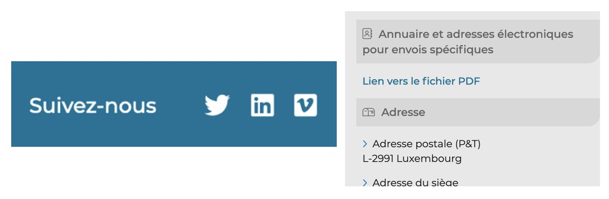On retrouve des textes qui devraient être structurés sous forme de titre, par exemple :
- Dans le pied de page, le texte "Suivez-nous" devrait être un titre ;
- Dans la page "Contact", les textes "Annuaire et adresses électroniques pour envois spécifiques" et "Adresse", par exemple.
Dans la liste de résultats, des titres sont manquants, par exemple les textes "Règlement d’exécution (UE) 2022/1210 de la Commission du 13 juillet 2022" et "Circulaire CSSF 22/813" devraient être des titres.
Listes
La structuration en listes permet aux utilisateurs de lecteurs d'écran de consulter plus rapidement le contenu, grâce à des raccourcis spécifiques, et d'accéder directement à une liste ou de la passer sans avoir à en parcourir tous les items.
Constats sur le site
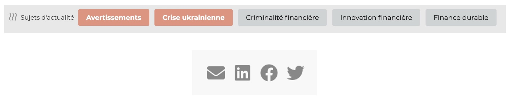On retrouve des suites de liens qui ne sont pas structurées sous forme de liste, par exemple :
- Dans la page d'Accueil, la suite de liens du bloc "Sujets d'actualité" ;
- Dans la page Contact, la suite de liens de partage vers les réseaux sociaux.
Citations
L'absence de signalement des citations peut rendre le contenu plus complexe à comprendre pour les personnes aveugles et les grands malvoyants, et générer des ambiguïtés et des incompréhensions.
Constats sur le site
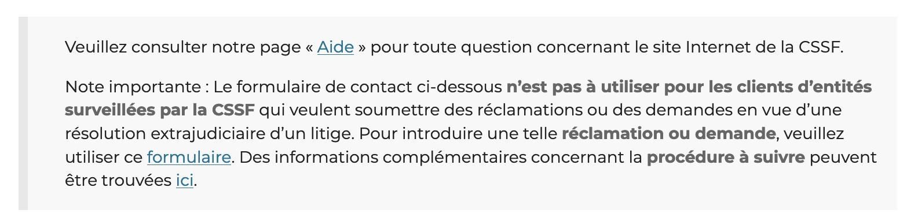Dans la page "Contact", on retrouve une utilisation inappropriée de la balise <blockquote> autour du texte introductif.
Structure du document
L'utilisation correcte des balises HTML5 et des landmarks ARIA va permettre d'enrichir la restitution pour les utilisateurs aveugles qui ne perçoivent pas les mises en forme : la navigation principale ne sera plus perçue simplement comme une liste de liens, elle sera restituée à l'utilisateur comme un élément de navigation, par l'intermédiaire du lecteur d'écran qui annoncera « région » ou « repère ».
De plus, ces marqueurs sémantiques vont également constituer des éléments de navigation rapide dans la page. Grâce à un raccourci clavier, certains utilisateurs vont pouvoir naviguer plus rapidement entre les régions qui auront été ainsi identifiées.
Constats sur le site
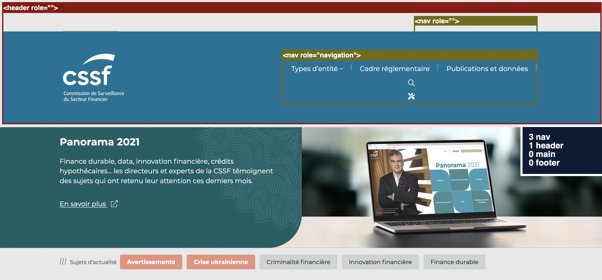Sur l'ensemble des pages, il manque l'élément <main> sur le contenu principal et l'élément <footer> sur le pied de page.
Présentation de l'information
Recommandation
Utiliser des feuilles de styles pour contrôler la présentation de l'information. Vérifier l'effet de l'agrandissement des tailles des caractères sur la lisibilité. S'assurer que les liens sont correctement identifiables, que la prise de focus est signalée, que l'interlignage est suffisant et donner la possibilité à l'utilisateur de contrôler la justification des textes. S'assurer que les textes cachés sont correctement restitués et que l'information n'est pas donnée uniquement par la forme ou la position d'un élément. S'assurer que les contenus sont lisibles et utilisables dans une fenêtre de largeur réduite. Veiller à ce que l'application de paramètres typographiques n'entraîne pas la perte de contenu ou de fonctionnalité. S'assurer que les contenus qui apparaissent au survol et à la prise de focus puissent être contrôlés par l'utilisateur.
Contenu compréhensible sans les styles : ordre visible vs ordre réel
Un utilisateur aveugle n'a pas accès à la mise en forme qui parfois est porteuse d'informations importantes, notamment des relations entre les éléments.
Il est important de ne pas implémenter les textes dans l'ordre visuel, mais bien dans l'ordre logique de dépendance et hiérarchie des éléments.
Le contenu doit rester compréhensible sans les feuilles de styles (vous pouvez tester vos contenus en désactivant les feuilles de styles).
Constats sur le site
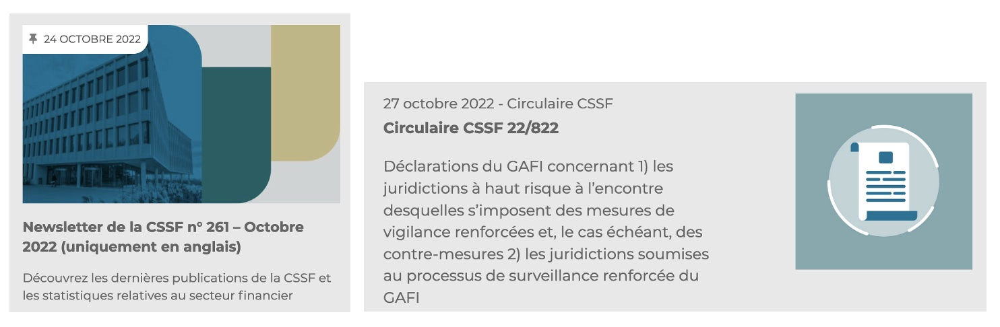Dans la page d'Accueil, dans les blocs "Actualités" ou "À la une", la date est positionnée avant le titre auquel elle se réfère dans le code HTML, alors qu'elle devrait être positionnée après.
Liens dont la nature n'est pas évidente
Un lien dont la nature n'est pas évidente est un lien qui peut être confondu avec un texte normal lorsqu'il est signalé uniquement par la couleur par certains utilisateurs ne percevant pas ou mal les couleurs.
Les personnes déficientes visuelles peuvent ignorer ces liens puisque ceux-ci ne sont pas visuellement discernables du reste du texte dans lequel ils sont insérés.
Constats sur le site
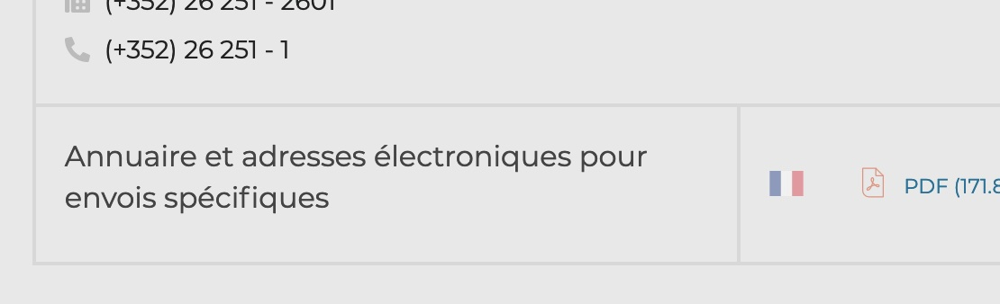Dans la page "La CSSF", le lien "Annuaire et adresses électroniques pour envois spécifiques" n'est pas visible par rapport au texte environnant.
Visibilité de la prise de focus
Les personnes avec un handicap moteur qui naviguent au clavier peuvent rencontrer des difficultés considérables à utiliser du contenu si elles ne sont pas en mesure de repérer l'indication visuelle du focus et ses déplacements.
Constats sur le site

Dans la page d'Accueil, la prise de focus n'est pas suffisamment visible sur certains éléments, notamment les liens composites dans le bloc "Actu" ou les liens-images dans "À la une".
Information donnée par la forme, la taille ou la position
Les utilisateurs qui ne perçoivent pas la mise en forme (utilisateurs aveugles par exemple) n'auront pas accès aux informations véhiculées par la mise en forme la taille (taille du texte pour signifier un degré d'importance par exemple), ou la position (une consigne indiquant de cliquer en haut à droite par exemple). Il est nécessaire de fournir un équivalent textuel qui permette d'offrir la même information aux utilisateurs aveugles.
Constats sur le site
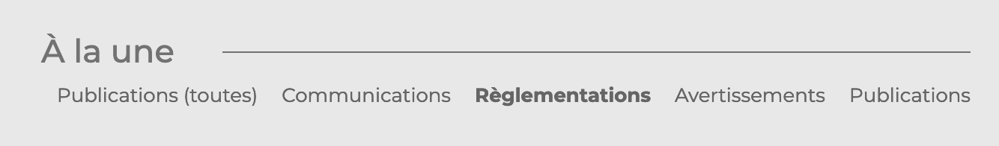Dans le bloc "À la une" de la page d'Accueil, dans les filtres de publications, l'élément actif est indiqué par la forme (texte gras).
Formulaires
Recommandation :
Associer pour chaque formulaire chacun de ses champs à son étiquette, grouper les champs dans des blocs d'informations de même nature, regrouper les items de même nature dans les listes de choix, donner à chaque bouton un intitulé explicite. Vérifier la présence d'aide à la saisie, s'assurer que le contrôle de saisie est accessible et que l'utilisateur peut contrôler les données à caractère financier, juridique ou personnel.
Étiquettes et champs
Les champs de formulaires doivent tous posséder des étiquettes correctement reliées.
Une étiquette de champ est un texte situé à proximité du champ de formulaire qui permet de connaître la nature, le type ou le format des informations attendues.
De cette manière, lorsqu'un utilisateur entre dans le champ de saisie avec un lecteur d'écran, le lecteur d'écran lit le contenu de l'étiquette. L'utilisateur comprend alors ce qu'il doit saisir.
Sans cela, même si une étiquette est présente visuellement, l'utilisateur entendra « champ de saisie vide » en entrant dans le champ et ne saura donc pas quoi saisir.
Constats sur le site
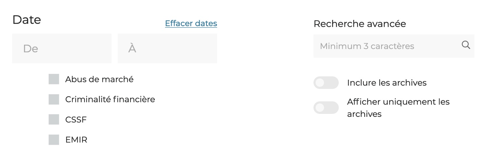Dans la page "Cadre réglementaire", on trouve plusieurs champs sans étiquette ou avec une étiquette qui n'est pas correctement liée, par exemple :
- Les cases à cocher dans les filtres avancés ;
- Les champs "Date" dans les filtres avancés ;
- Le champ "Recherche avancée" dans les filtres avancés.
Contrôle de saisie et aide à la saisie
Tous les champs obligatoires doivent être identifiés préalablement à toute validation de l’utilisateur.
Pour les champs qui attendent un format de saisie particulier pour être validés, ce format doit être spécifié à l’utilisateur par un passage de texte visible à proximité du champ. De plus, si l’utilisateur commet une erreur sur ce champ, alors le message d’erreur doit présenter un exemple réel de saisie.
Enfin, les messages d'erreur de saisie des champs de formulaire doivent être liés correctement aux champs en erreur.
Constats sur le site
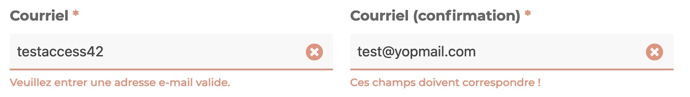Dans le formulaire de contact, les champs email attendent un format spécifique qui devrait être indiqué à proximité du champ, dans l'étiquette par exemple, ainsi que dans le message d'erreur.
Regroupements de champs et légendes
Les regroupements de champs sont utiles pour ne pas induire certains utilisateurs en erreur, notamment les personnes aveugles.
Les cas typiques de regroupements nécessaires sont les groupes de cases à cocher ou de boutons radio.
Il faut implémenter les champs dans un regroupement lorsque c'est nécessaire et il est obligatoire de définir une légende à ce regroupement.
Constats sur le site

Dans la page "Cadre réglementaire", on trouve des champs qui ne sont pas regroupés, par exemple les champs "De" et "À" du groupe "Date".
Identification des données attendues
Certains utilisateurs qui ont des troubles d'accès au langage verbal (paralysie cérébrale, aphasie par exemple) auront des difficultés à accéder au sens des termes écrits. Ainsi, pour leur permettre de remplacer les étiquettes présentes dans les formulaires par des étiquettes (verbales ou imagées) qu'ils connaissent, il est nécessaire d'identifier les champs avec un attribut particulier, de sorte qu'une technologie d'assistance pourra réaliser la personnalisation du formulaire nécessaire à l'utilisateur.
L'identification de ces champs permet également aux utilisateurs d'employer des outils pour remplir automatiquement les champs identifiés avec des valeurs de l'utilisateur.
On ne va rechercher que les champs qui attendent une donnée personnelle. Le RGAA demande d'utiliser l'attribut autocomplete et il fournit l'ensemble des valeurs possibles pour l'attribut.
Constats sur le site
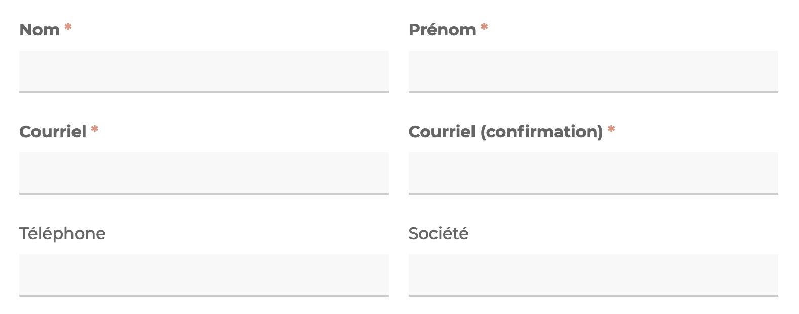Dans le formulaire de contact, certains champs de formulaire n'ont pas d'attribut autocomplete, par exemple :
- Le champ "Nom" devrait avoir l'attribut
autocomplete="name"; - Le champ "Prénom" devrait avoir l'attribut
autocomplete="given-name"; - Le champ "Email" devrait avoir l'attribut
autocomplete="email"; - Le champ "Téléphone" devrait avoir l'attribut
autocomplete="tel".
Navigation
Recommandation :
Faciliter la navigation dans un ensemble de pages par au moins deux systèmes de navigation différents (menu de navigation, plan du site ou moteur de recherche), un fil d'Ariane et l'indication de la page active dans le menu de navigation. Identifier les groupes de liens importants et la zone de contenu et donner la possibilité de les éviter par des liens de navigation interne. S'assurer que l'ordre de tabulation est cohérent et que la page ne comporte pas de piège au clavier. S'assurer que les raccourcis clavier qui utilisent une seule touche sont contrôlables par l'utilisateur.
Liens d'accès rapide
On note l'absence d'un lien d'accès rapide au contenu au moins. Les liens d'accès rapides sont utiles aux utilisateurs qui naviguent au clavier, mais aussi aux utilisateurs malvoyants qui utilisent une loupe d'écran afin de sauter rapidement les éléments redondants, comme la navigation.
Pour cela, il est préférable que ces liens soient toujours visibles à l'écran. Malgré cela, ces liens peuvent être positionnés hors écran, mais doivent au moins être rendus visibles à la prise de focus.
Il est donc nécessaire d'implémenter au moins un lien d'accès rapide au contenu, qui permet de sauter toute la navigation principale.
Constats sur le site
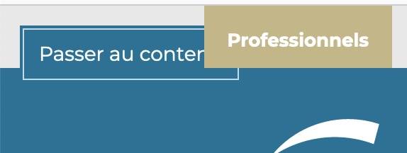Le lien d'accès rapide "Aller au contenu" n'est pas fonctionnel, il n'atteint pas la zone de contenu principal.
Landmarks ARIA
Pour fournir des points de repère aux utilisateurs aveugles, il faudra également implémenter les landmarks ARIA sur les balises HTML 5 de la page.
Constats sur le site
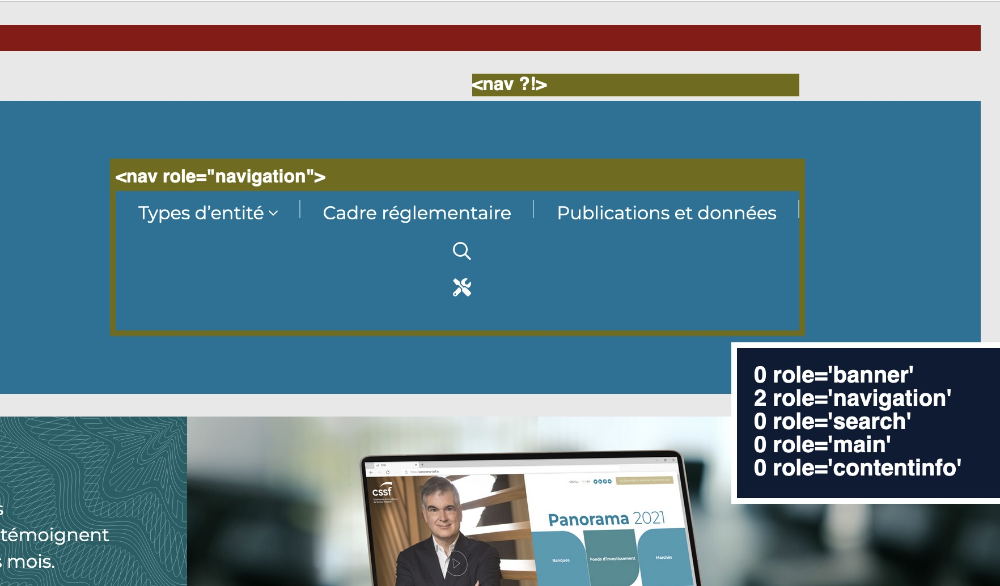Certains landmarks ARIA sont manquants sur les balises HTML5 déjà existantes, notamment :
role="banner"sur l'en-tête.
Consultation
Recommandation
Vérifier que l'utilisateur a le contrôle des procédés de rafraîchissement, des changements brusques de luminosité, des ouvertures de nouvelles fenêtres et des contenus en mouvement ou clignotants. Ne pas faire dépendre l'accomplissement d'une tâche d'une limite de temps sauf si elle est essentielle et s'assurer que les données saisies sont récupérées après une interruption de session authentifiée. Proposer des versions accessibles ou rendre accessibles les documents en téléchargement. S'assurer que la consultation n'est pas dépendante de l'orientation de l'écran. Toujours proposer un geste simple en alternative d'un geste complexe permettant de réaliser une action.
Documents en téléchargement
Assurez-vous que chaque document soit accessible (cf. les Guides de créations de documents bureautiques accessibles), ou qu'il dispose d'une alternative accessible proposant le même contenu (par exemple, une version HTML correctement structurée).
Constats sur le site
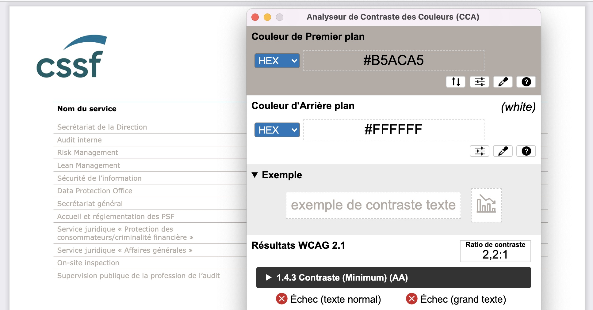Dans la page "Contact", le PDF "annuaire_et_adresses_electroniques_specifiques.pdf" présente des problèmes de contraste.